Founders meeting: what we're deciding
Tonight, Sunday 4 October, 6pm. Read this before we sit down. Seven calls to make, a few quick yes/nos, the dashboard on your phone, then who owns what. Come with your answers, not your first thoughts.
Before the meeting
- Vote on the three polls. Fly or sea plus the slides, the box lid and story, and tonight's calls (the box extras, the offer, the warranty, socials, the free pairs, the catch-up night, the WHS Show, and your own yes or no on footage and AI). Vote now if you know your answer, or in the room after we talk it through. Con hasn't voted on the box yet.
- Know your answer on the seven calls below. Each one says what we need from you.
- Look at your jobs list at the bottom. It's a proposal. Come ready to change it, not to shrink it.
Vote: fly or sea, and the slides
Vote: box lid and inside-lid story
Vote on tonight's calls
Where we are
- The boots finish on 28 November (Don's written date). By sea they land the first week of January. If we fly 150, those land in early December.
- Tongue label is final. Box artwork goes to Don by 15 October. Bags arrive at the factory late October. Socks have to be there by 15 November, Don's last day.
- We've asked for insurance cover from 1 December. The stock goes to Fil's place.
- TIACS has our $5-a-pair offer. We're waiting on their yes in writing.
- We're getting a PO box or similar for the business. No home address and no factory name on anything a customer sees.
- Instagram 3,490 followers. 126 people on the Founding Crew list. That One Bloke did 374,000 views.
Call 1: fly the first 150, or everything by sea
| Fly 150, rest by sea | About $3,362 more. The first 100 buyers plus the 50 free pairs get boots in early December, before Christmas. Two shipments, double the paperwork. The factory wants the full balance paid when production ends. |
| All by sea | Cheapest. Everything lands the first week of January. Nobody gets boots for Christmas. |
The freight company's air price only holds until 8 October, so this one can't wait past the meeting.
What we need from you
Your vote on the poll before we sit down.
Call 2: the slides
The slide maker now says an order placed in October finishes at the end of January and ships around 10 February. That's double the time they first gave us, and it misses the first box. We've asked them to make the first 150 inside the 45-60 days they first quoted, so those land with the boots in early December. They answer on 8 October. The branded sample pairs land around 9 October.
- Take slides out of the first box and send them later, or drop them.
- Or hold the first box until slides arrive (not recommended: the boots would sit).
- Do we pay about USD 2,000 for the size 47/48 moulds so the biggest sizes get slides too?
What we need from you
Your vote on the same poll, then a final yes or no once the samples are on our feet.
Call 3: the box
This is the box with our photo, the one from the website, inside the charcoal lid. We can use it or take a new one. If we use it, the names under the photo have to run in the order we're sitting.
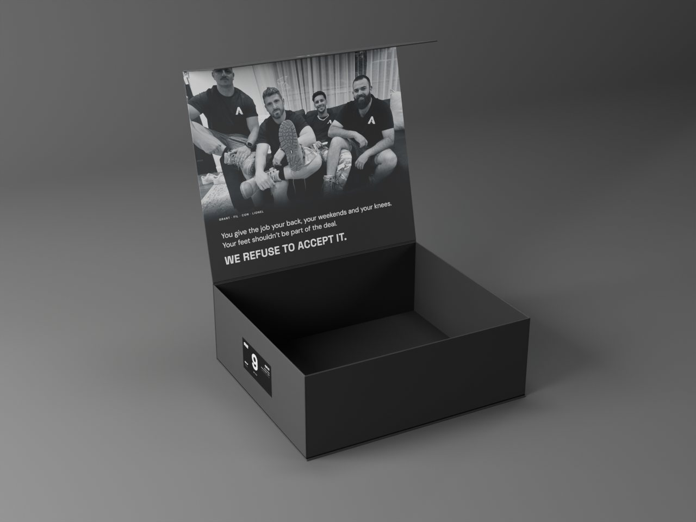
3D render from the real print files, not a photo. Charcoal lid, which leads the poll 2 to 1.
The three inside-lid stories (vote on the poll):
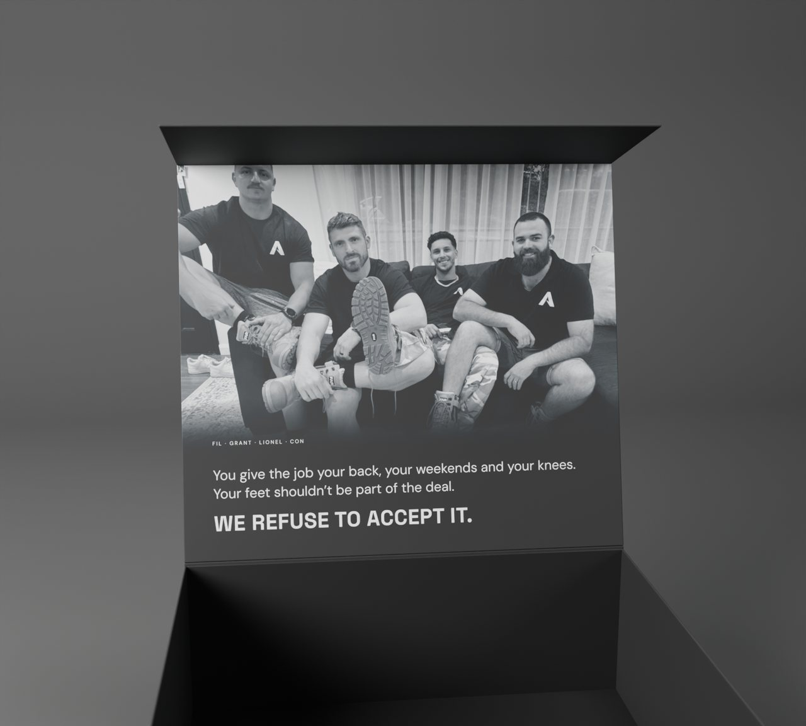
1. The deal: "You give the job your back, your weekends and your knees. Your feet shouldn't be part of the deal."
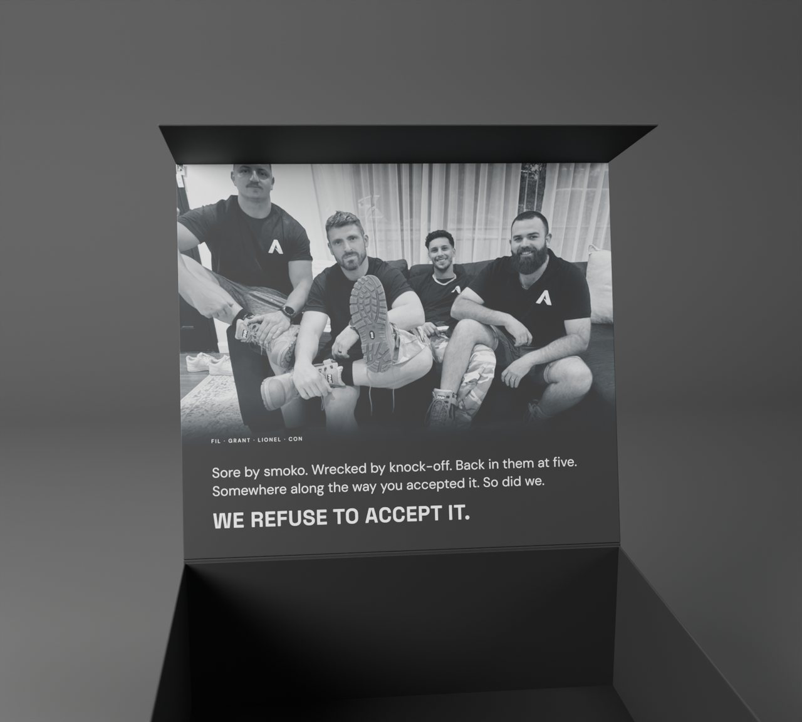
2. The slide: "Sore by smoko. Wrecked by knock-off. Back in them at five. Somewhere along the way you accepted it. So did we."
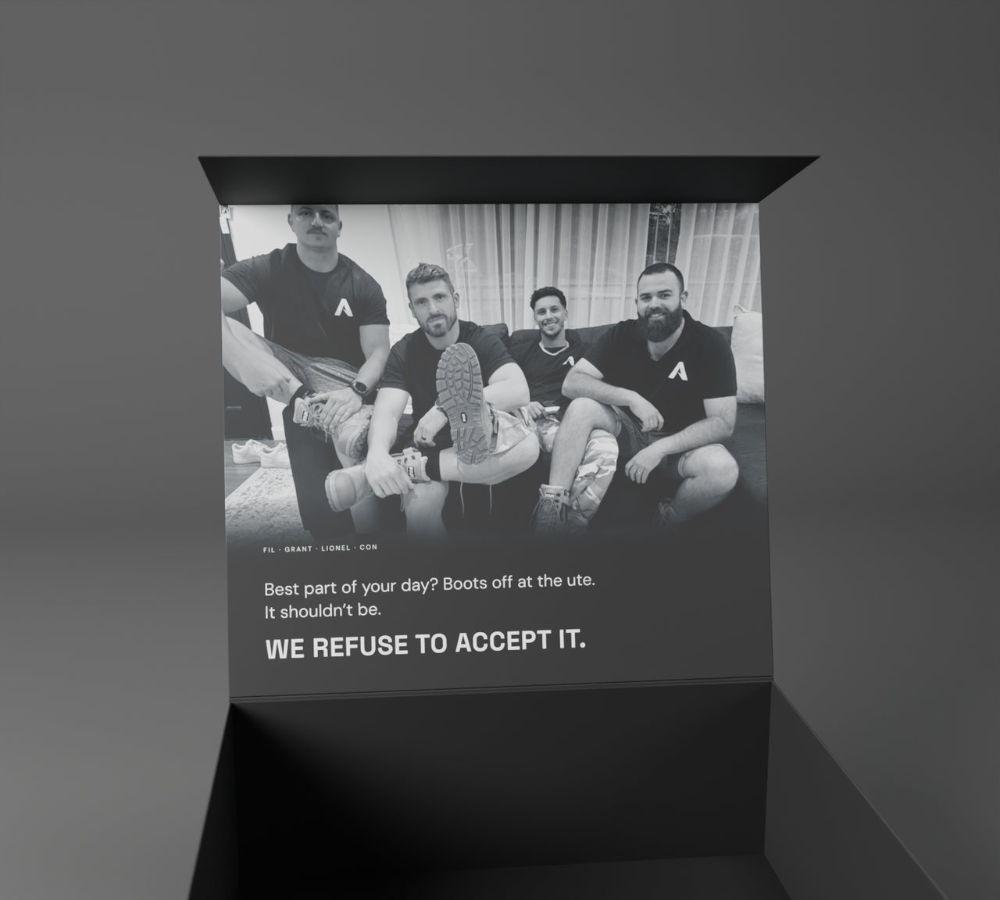
3. The best part: "Best part of your day? Boots off at the ute. It shouldn't be."
What goes in it
Already planned for every box: the boots, a pair of FAR work socks, the boot bag, a Day 1 card, the QR feedback card, stickers, and the safety info leaflet (the standard says it has to be in there).
First 100 only: the slides (if they make it, see call 2), a handwritten note, and the numbered tag on the boot ("Boot No. __ of 500").
Ideas on the table, not decided:
- A FAR car air freshener (Fil's idea). Three shapes below, each with the tagline or with the logo only. One more option: logo on the front, tagline on the back, since it spins. Price: about $250-320 for 500 (a maker in China or one here, 500 minimum). We put these and the stickers in the boxes here, with the handwritten notes, so the factory deadline doesn't matter. Each one has to be sealed in plastic, or the boots smell of it.
- A TIACS card. Who they are and why we back them, plus a small wallet card with their number. TIACS said the cards are fine on the phone. We're waiting on it in writing.
- A wear-week challenge card. Wear them every shift for a week, post the verdict.
- Got another idea? Bring it to this part of the meeting, or drop it in the group chat and we'll talk it through later.
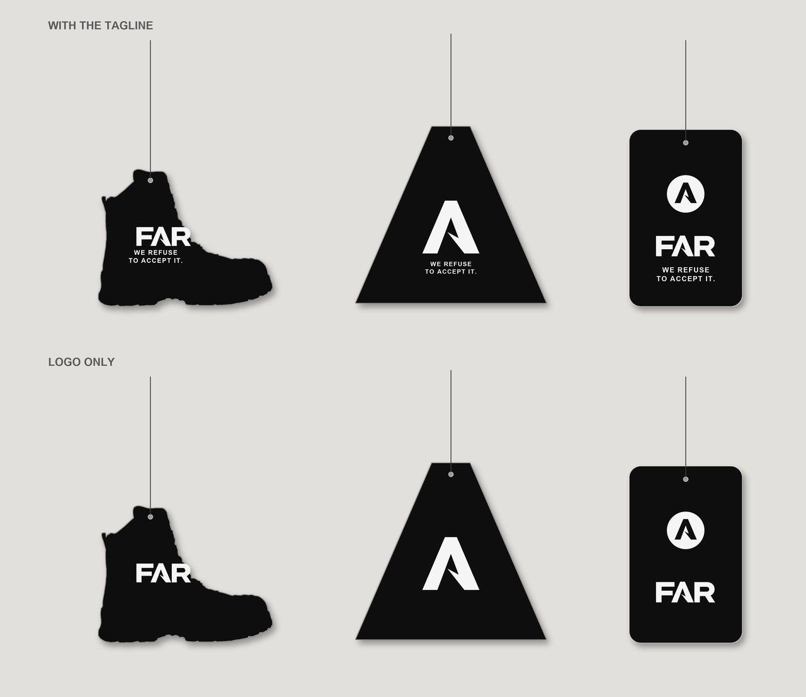
Air freshener concepts, built from our own logo and the real boot outline. Top row with the tagline, bottom row logo only.
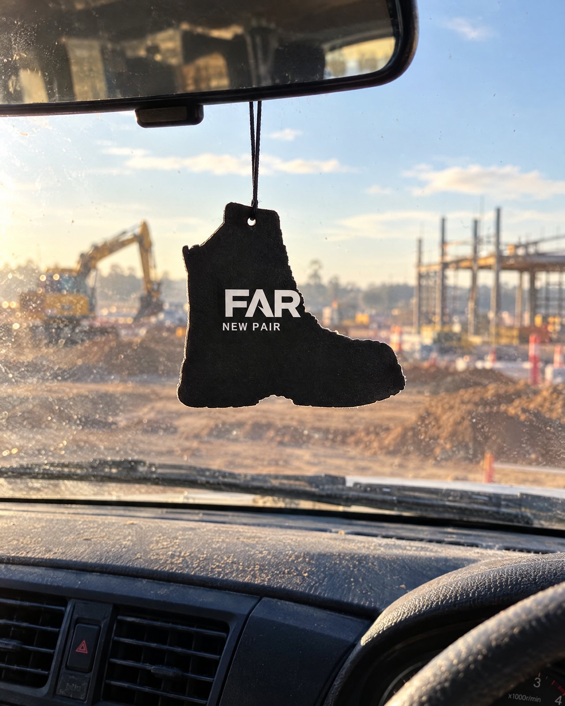
AI mockup of the boot one (with the tagline) hanging in a ute, so we can picture it. Not a real product yet.
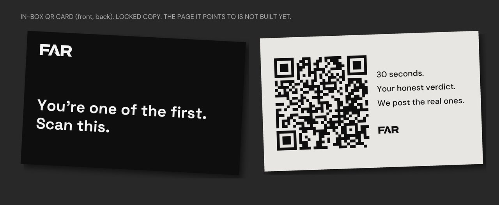
The QR feedback card. The words are already locked. The QR takes them to a 30-second "first knock-off in FARs, how'd they go?" page we still have to build.
What we need from you
Vote on the lid and story. Decide in the room: new photo or the website one, and what else goes in.
Vote on tonight's calls
Call 4: the offer
- Confirm: $219 for the first 100 sold, plus 50 free pairs to seed with tradie creators and foremen still on the tools.
- Price after the first 100: $229 or $249. It can't stay $219: "first 100 at $219" with no rise after is a fake limited offer, and consumer law is strict on that.
- When we take the money: pay now and wait for boots, or pay when the boots land. The middle option is a reservation round: tell us your size, lock the $219 for the first 100, pick your boot number from 1 to 100, nothing to pay until they land. It also tells us which sizes to fly.
- The referral offer (3 sign-ups get socks, 5 get slides, 10 get a free pair) is still live on the website, even though we said no to it on 8 September. Leaning: kill it. One person has 10 referrals, so they've earned a free pair if their mates are real, and a couple more are owed socks or slides. The sign-up form runs through KickoffLabs, so we switch the form over before cancelling it. The reservation round replaces it.
- Where the first 100 come from. Not the email list. Kickstarter's own numbers say 1 to 5 in every 100 people on a list actually buy, and a well-warmed list maybe 10. Ours is 126 people, so that's somewhere between 1 and 13 pairs. Our six emails so far haven't sold a thing. So roughly 90 of the first 100 have to come from the four of us personally asking people we know.
What we need from you
Price after 100: $229 or $249. Pay now, pay on arrival, or the reservation round. Kill the referral offer: yes or no. And a number from each of us: how many people you'll personally ask before launch, with your first names written down.
Vote on tonight's calls
Call 5: the warranty
Some of our documents say 18 months. That number came from an early draft and nobody ever agreed to it. What everyone else offers:
| 6 months | Steel Blue, Blundstone, Mongrel, Rossi, Oliver, Puma Safety, CAT |
| 12 months | Redback, Red Wing, Timberland PRO |
| Our factory | 6 months on manufacturing faults, and it can start from the day the boots arrive in Australia |
Anything past 6 months, we pay for ourselves. Australian Consumer Law protects buyers whatever we put on paper.
What people actually complain about in reviews isn't the number. It's brands knocking back claims (Redback, Blundstone), and boots dying just past the warranty (a Steel Blue zip at six and a half months). Whatever number we pick, honouring it is the difference.
Recommendation
6 months on manufacturing faults, matching the factory and the market. Our real promise is the one already on the website: wear them to work for 30 days from the day they turn up, and if they're not right, send them back.
What we need from you
6 or 12 months.
Vote on tonight's calls
Call 6: who runs FAR's socials, day to day
All four of us are logged into FAR's Instagram. Only Fil is on TikTok, and he's sorting the setting so the rest of us can get in. What isn't getting done:
- Replies to comments. 19 have been waiting since 16 September. The dashboard has already written every reply, in the voice of whoever is in the reel. Anyone can send any of them.
- Commenting on other people's posts from FAR's account, on whatever comes up in FAR's feed. We already follow plenty of Aussie tradies. That's how a page our size grows.
- A first message to every new follower. Instagram only lets a few accounts auto-message new followers, through a tool called ManyChat. FAR has it. We're setting it up so every new follower gets a hello and the sign-up link without anyone typing it. Three versions to vote on (or bring a better one):
1. "This is the bit where a big brand sends you a discount code. We haven't even got a shop yet. Want the next best thing?" Button: Go on then
2. "There's a long story about four blokes building a work boot. Want the smoko version?" Button: Smoko version, go
3. "Four blokes, one boot, not a lot of sleep. Want to see what we've been up to?" Button: Show me the boot
- Story reshares of our posts.
Proposal
Replies: all four of us, on every post. Whoever opens the dashboard clears what's waiting. Nothing sits longer than 24 hours.
Commenting on other posts: the tradies, 10 minutes a day each.
First messages: automatic, through ManyChat.
Reshares: all of us, every FAR post to our own story.
Posting to TikTok and YouTube Shorts: the brain does it. We're testing a tool that takes each Instagram reel and posts it to both, so nobody has to re-export anything.
What we need from you
Agree or change who does what, and pick the first message.
Vote on tonight's calls
Call 7: the founder paperwork
Four equal owners since 1 October. Now it goes on paper:
- The founder agreement: vesting, what happens if someone leaves, and the start date.
- Con's name onto the company records.
- How we decide things now there are four of us. On 8 September we said big calls need everyone and small calls one or two. We still haven't said what counts as big.
- GrantWhere's Dave's contract at? Is it signed?
What we need from you
A date for the paperwork sit-down, and who we bring in.
Quick yes or no
- WHS Show, 21-22 October, ICC Sydney: who takes a day off to go?
- Stickers and posters: go or no. Stickers: about $70 for 100 or $190 for 500 (Australian printer, weatherproof vinyl, 6.5 cm, 3-5 days). Twenty A3 posters: about $145 delivered.
- A weekly 20-minute catch-up: pick the day and time tonight.
- Sock wear test, all four of us: pick up your pair today, wear it for a full shift and post your verdict in the group chat by Tuesday night, 6 October. The 500-sock order goes in on 8 October.
- The 50 free pairs: how many to creators, how many to foremen. All four sign off on every name.
- Likeness release: one page each saying FAR can use the footage you're in. And a yes or no each on putting your face into AI image tools. Fil has said yes to his.
Vote on these (all but the socks)
The dashboard, on your phone in the room
Phones out, ten minutes. Fil puts the dashboard up on the screen and goes through it in this order. Do each step on your own phone as he goes. The pictures are Fil's phone, taken this afternoon.
New since last meeting: the Tasks tab, the Jobs board, Pick one up, a calmer Today page, polls on your phone, the 7am card, Work on it, Hand to the boss, the Emails tab with Redraft, and work sessions (Fil first).
1. Today: what needs you
The cards that need a founder, your tasks for today and the boss's jobs, on one page. Tap Work on it on any card and the brain (Claude, running on FAR's server) drafts it, researches it or lists the next steps in about a minute. It can't send anything or change anything. Clear for me hides a card for you only.
Hand to the boss is for bigger jobs: it plans the job and shows its work, and nothing goes out until one of us taps Approve.
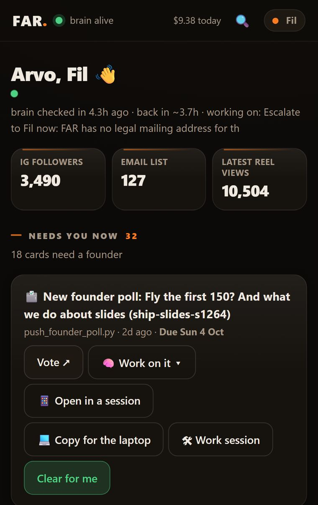
Fil has three extra buttons for now (Open in a session, Copy for the laptop, Work session). Yours show Work on it and Clear for me.
2. Tasks: your jobs, one list
A task is a job for one of us, not for Claude. Open Tasks to see yours and tick it off when it's done. The date on a task is when to start it. Pick one up is a list of jobs anyone can grab: tap Take it and it's yours. Give to hands a job to someone else.
When you finish one. Tick it, and it moves to Done (the last two weeks show there). If the job made something, like a list, a video or a set of names, put it where it lives: the Drive, the Seeding tab or the group chat. Then tap What came out of it? on the done task and paste the link or a one-line note, so the rest of us can find it.
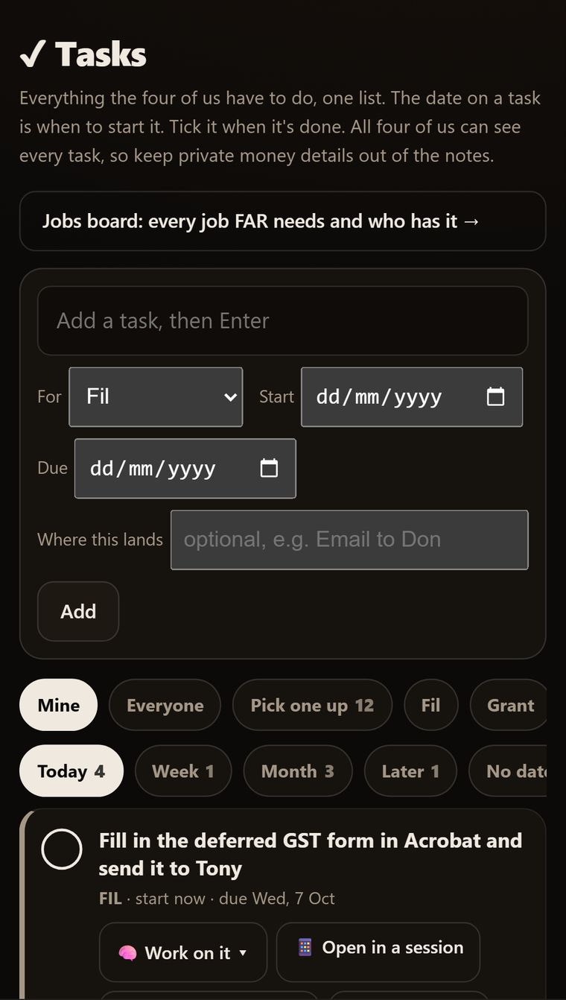
3. The Jobs board: every job FAR needs
All 215 jobs from the business task list, grouped by area, with a bar for each area showing what's moving. Right now 213 have nobody on them. Tap Take it on a job you'll own. All four of us see the same board.
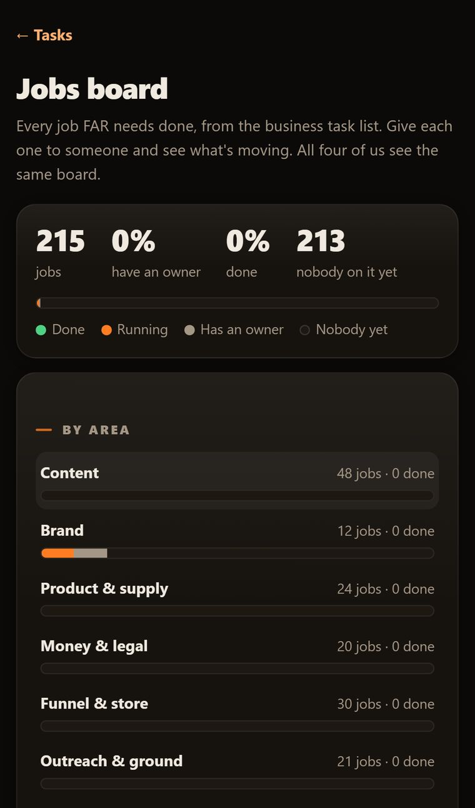
4. Chat: ask the brain anything
Tap Chat at the bottom and ask it anything about FAR. Paste a link, like a competitor's post, an article or a reel you liked, and it goes and reads it. Under every answer: Bank as idea puts it on the Ideas board, Make it an action turns it into a task.
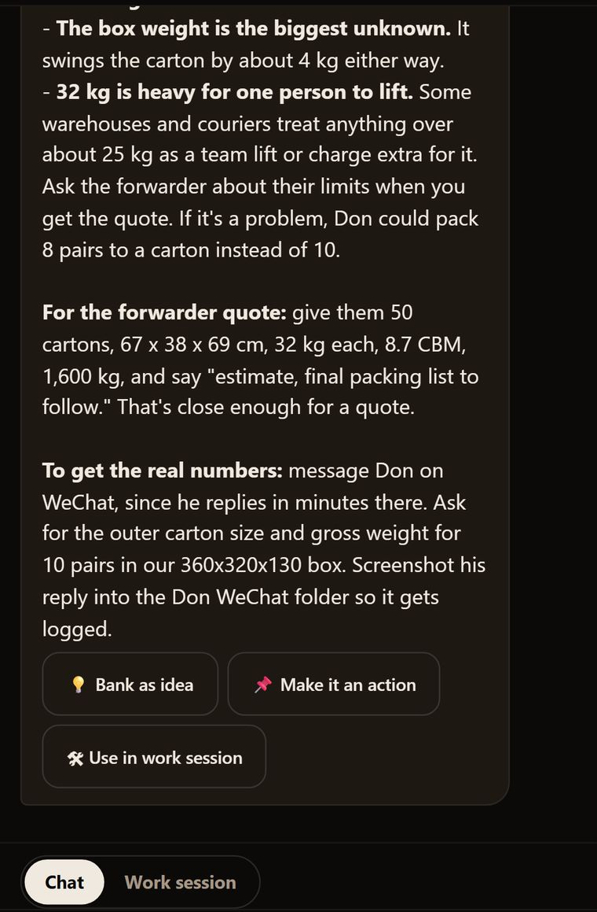
5. New: work sessions Fil first
A work session is Claude on FAR's server working through a job with you over a few messages. It reads all of FAR's files and the live dashboard. Tap 🛠 Work session on a card, a task or a job, and it opens with that job already in the box.
In this first version nothing it changes goes live, and it can't use the web. Research goes through Chat: the session gives you an Ask Chat button, Chat looks it up, and one tap brings the answer back into the session.
Fil is using it now. The other three of us get it after one more security step.
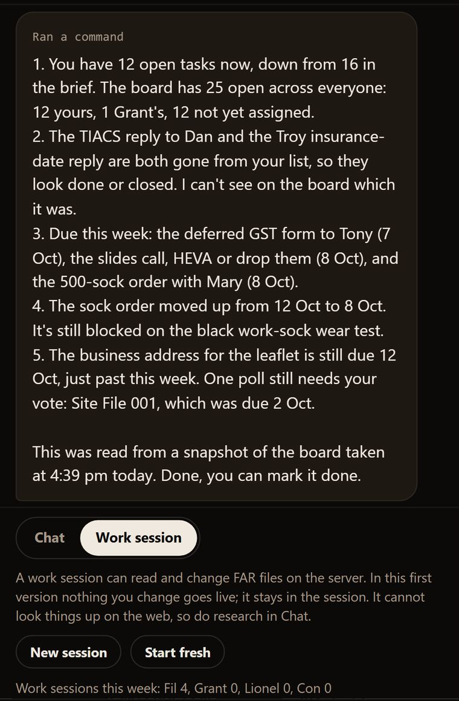
This afternoon's test: it read the live board, said what had changed since a two-day-old card and listed what's due this week.
6. Video
Studio, then Video. Watch a clip: paste a Google Drive link to one video. The brain watches it and writes the brief: hooks, the first frame, a cover and a caption. You get a ping when it's ready. Edit it makes a cut from your clips and notes. It runs on Fil's laptop and is still being tuned, so treat its cuts as drafts for now.
We'll do these in the room:
- Open Tasks, tick one, then take one from Pick one up.
- Vote on tonight's calls (the button above) and any other poll still open.
- Send the 19 comment replies waiting on the Comms tab.
- Ask Chat one real question with a link in it, then bank the best idea from the answer.
- ConGrantAdd the dashboard to your Home Screen, turn on notifications, tap Send me a test ping.
Not ready yet: work sessions for Grant, Lionel and Con (after one more security step). Anything you type into the dashboard can be read by all four of us.
Jobs: who owns what (proposal, we lock it in the room)
The rule for this list: if the brain can do it, the brain does it. Your jobs are the things only you can do: your face on camera, your mates, your trade, your feed. Each job has a "done when" so there's no arguing about whether it's done. Dates are proposals.
Finished edits go in the group chat. Anyone can give feedback. If nobody objects within a day, it goes up.
The 5 solo scripts
The straight questions (85)
Grant
- Pick 3 of the 5 solo scripts on the Ideas board and film them at home: Knock-Off Test, The Insole, Shed Pair, Bad Advice, or a straight question. Any of them works for either of you, as long as the bracketed lines are your own real detail. The Knock-Off Test needs a sample pair on your feet, and Shed Pair needs two of your own old pairs. Done when 3-4 takes of each are in the Drive raw folder. By Sun 11 Oct.
- Micromanager refilm with Lionel. Done when it's filmed on a private location we've cleared. By Sun 18 Oct.
- 10 minutes a day commenting from FAR's account on posts in FAR's feed. Daily.
- Ask your crew what they hate about their boots. Done when 5 answers in their own words, with their trade, are in the group chat. By Fri 9 Oct.
- 10 names for the free pairs: 5 foremen, 5 creators still on the tools. Done when they're on the Seeding tab with handle, trade and size. Nobody gets contacted yet. By Sun 11 Oct.
- Dave's contract: tell us where it's at.
Lionel
- Get your Things You Hear edit and the Apprentice Stitch Up into the group chat. This week.
- Edit the solo videos as they come in from you and Grant. Done when each is in the group chat. Within a week of the footage landing.
- Pick 3 of the 5 solo scripts on the Ideas board and film them at home: Knock-Off Test, The Insole, Shed Pair, Bad Advice, or a straight question. Any of them works for either of you, as long as the bracketed lines are your own real detail. The Knock-Off Test needs a sample pair on your feet, and Shed Pair needs two of your own old pairs. Done when 3-4 takes of each are in the Drive raw folder. By Sun 11 Oct.
- 10 minutes a day commenting from FAR's account on posts in FAR's feed. Daily.
Con
- Read ProductReview, Reddit and Whirlpool for boot complaints and put the best ones on the Ideas board. Every fortnight. The first lot (10) is already there.
- One carousel idea a week on the Ideas board. Weekly.
- The new bloke in our group comedy: the apprentice, the one who gets stitched up. Every filming day.
- Sign up to our website on your phone like a stranger would. Done when every page and email is screenshotted and anything broken is in the group chat. This week.
All of us
- Reshare every FAR post to your own story. Every post.
- Clear the comment replies on the Comms tab whenever you open the dashboard. Any post, not just yours. Nothing sits longer than 24 hours.
- Filming days: everyone brings their kit charged. Whoever films on their phone copies their footage to that day's folder in the Drive the same night.
- Sock wear test, full shift, verdict in the group chat. By Tue 6 Oct, night.
- 10 names each for the launch messages: people you'll personally ask to buy. On the tracker by Sun 11 Oct. That's the first batch; call 4 sets how many each of us asks in total.
- Answer every poll within 48 hours.
- The photo for the box, if we're taking a new one. By about 10 Oct.
The brain does these
- Writes a reply to every comment on our posts, in the voice of whoever is in the reel. You just tap send.
- Did a fresh sweep of real boot complaints today: 37 new ones off ProductReview, most from the last five months. Blundstone heels split in under a week, an Oliver sole gone after 4 days, Steel Blue soles crumbling in the cupboard. The top 10 are on the Ideas board. From here Con reads them every fortnight.
- Posts each Instagram reel to TikTok and YouTube Shorts. Being tested.
- Writes the check sheet for when the cartons land: sole bond, heel, insole, size, count.
- Got the prices for the air freshener, stickers and posters. They're in call 3 and the quick yes/nos.